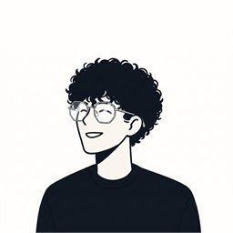

Javier Rodríguez
Construyo productos web de punta a punta con React, Angular y TypeScript. Me especializo en interfaces de tiempo real.
Sobre mí
Empecé en soporte técnico resolviendo problemas de usuarios reales, configurando redes y manteniendo hardware. Esa base se nota en cómo construyo software: escucho antes de programar y priorizo que la interfaz sea clara para quien la usa todos los días.
Hoy soy Ingeniero de Sistemas y Desarrollador Full Stack, especializado en SPAs escalables con React y Angular. Trabajo sobre todo con comunicación en tiempo real (WebSockets) e integración de APIs REST. Construí, por ejemplo, el frontend de una plataforma de fichaje biométrico que muestra los accesos de una empresa en el instante en que suceden.
Me interesan los proyectos donde el dato tiene que llegar a tiempo: dashboards, monitoreo, notificaciones. Y me gusta dejar arquitecturas modulares que el próximo desarrollador entienda sin pedirme explicaciones.
Experiencia
Presente
Desarrollador Frontend
- Frontend de Control de Accesos, plataforma SaaS de fichaje biométrico con visualización de entradas y salidas en vivo. Comunicación por WebSocket con los dispositivos y notificaciones instantáneas.
- FiscalNube, sistema de gestión comercial tipo punto de venta, y una SPA en Angular para un cliente con más de 300 usuarios.
- Integración de dispositivos IoT en tanques para monitoreo de niveles en tiempo real, con generación automática de reportes en Excel.
- Componentes reutilizables en React y TypeScript bajo arquitectura modular. Decisiones sobre estructura de carpetas, estado e integración de APIs.
2024
Analista de Soporte
- Montaje de racks para servidores, armado y certificación de fichas de red, y configuración de redes locales (IP, routers y switches).
- Instalación de sistemas operativos y software especializado, con soporte técnico presencial y remoto a usuarios finales.
2019
Analista de Soporte
- Mantenimiento preventivo y correctivo de equipos informáticos, instalación de software y acompañamiento a usuarios finales.
- Capacitación en ofimática y herramientas de Windows.
Proyectos
Control de Accesos Biométrico
Fichaje por huella y tarjeta, con accesos en vivo.
Plataforma que se conecta directo a los dispositivos de fichaje (huella y tarjeta magnética) para mostrar en tiempo real quién entra y sale de cada área. Incluye registro de personas y sus huellas, organización por departamentos, dashboard en vivo y reportes de fichadas exportables. Fui el frontend del equipo: construí toda la interfaz en React y la comunicación por WebSocket que escucha los dispositivos y dispara las notificaciones al instante.
Gestión de Accesos y Visitas
Control de accesos sin hardware, con invitaciones por WhatsApp.
El otro sistema de control de accesos que hice, pero sin hardware de por medio: acá los datos de las personas se cargan directamente en el sistema para saber cuándo entran y salen. Permite mandar invitaciones por WhatsApp para agendar citas, bloquear el acceso a personas puntuales y registrar si la persona tiene vehículo, para controlar también el ingreso de autos. Lo armé yo solo, de punta a punta: base de datos, backend y frontend.
FiscalNube
Facturación tipo punto de venta para comercios.
Sistema de facturación tipo punto de venta, como el que usan los supermercados para cobrar: carga de productos, facturación, cierre de caja, consulta de saldo, reportes de ventas, usuarios y roles. Fui el frontend: construí toda la interfaz en React y TypeScript, con componentes pensados para que cajeros sin perfil técnico la usen sin fricción.
Dovas, pedidos de viandas
Reemplazó un Google Form y coordinación por WhatsApp.
Para Dovas, un catering que antes cargaba sus menús en un Google Form y coordinaba los pedidos por WhatsApp a mano. Armé un sistema con dos módulos: uno administrativo para cargar los platillos, habilitarlos por franja horaria, crear usuarios y ver el historial de pedidos, y uno de login para que sus clientes pidan comida directo desde la app. Hice todo yo solo: planificación, frontend, backend, la landing y el deploy.
App para niños con autismo
Juegos didácticos de apoyo al aprendizaje. Mi tesis.
Mi trabajo de tesis: una aplicación web con juegos didácticos pensados para apoyar el aprendizaje de niños con autismo, con una interfaz simple y feedback claro en cada interacción.
Recolección de datos electrónicos
Monitoreo en vivo de niveles en tanques de almacenamiento.
SPA de reportes para una empresa de productos de limpieza: mostrábamos en tiempo real los datos que un dispositivo instalado en sus tanques de almacenamiento iba recopilando, para hacer seguimiento de los niveles sin revisarlos a mano. Fui el frontend del equipo.
Ecommerce
Catálogo, login con Google y pagos con Mercado Pago.
Proyecto 100% personal: catálogo de productos, autenticación con Google y pasarela de pagos con Mercado Pago, armado de punta a punta para practicar un flujo real de ecommerce, del catálogo a la confirmación del pago.
Stack
React
Angular
TypeScript
JavaScript
HTML
CSS
Node.js
WebSockets
Supabase
Postman
- APIs REST
GitHub
Vercel
Google Analytics
Search Console
- Azure DevOps
Contacto
Disponible para posiciones full time de Frontend o Full Stack. Si liderás un equipo técnico o estás en RR.HH. y mi perfil encaja, escribime. Respondo rápido.